Newer: the four changes from your fluid / tape-deck / flourish report.
All thirteen families now have a flourish. Each fires on a rare, exceptional hit — about one every 30 seconds on real music — and each is the fault or the ritual that belongs to its own instrument.
Every one has a pixel-level test and was checked against deliberate mutations, so what is
below is not "does it work" but "is it right". Item 7, the Pantone plate slip, is still the one I
would change first. Regenerate these with
cargo test --release dump_flourishes -- --ignored, plus the per-family dumps named in each
caption's source.
Every segment lights, then drains back to the reading.
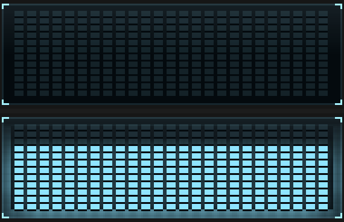
What I want your eyes on: Whether the drain reads as a self-test sequence or just as a bright flash.
Both needles driven to the end stop over 900ms with the OVER lamps lit.
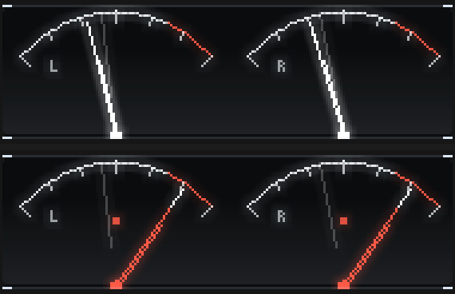
What I want your eyes on: Whether 900ms is too slow — a real slam is faster, but faster was hard to see.
Three columns of full-height energy written into the history, so it scrolls away as data.
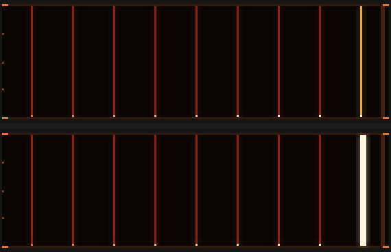
What I want your eyes on: Whether three columns is the right width. One read as merely a brighter column.
A cold blue haze fills every envelope — the wrong colour for the display, which is the point.
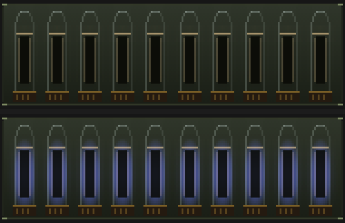
What I want your eyes on: Whether the blue is cold enough to read as a fault rather than a colourway change.
The unused digits all glow, as a badly-driven tube's do. 520ms, the shortest of the thirteen.
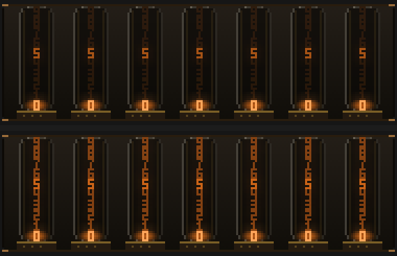
What I want your eyes on: Whether the live digit still clearly reads as the value. It keeps 68% of its legibility headroom, but that is a number, not an opinion.
The sweep free-runs, so the trace slides a screen-width of phase and the phosphor smears every phase it passes through.
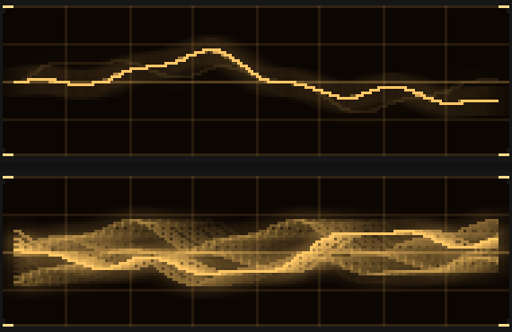
What I want your eyes on: Whether the smear is too heavy. It is what a real scope does, but it does fill the screen.
A plate slips 3px vertically, so every element splits into red/green/blue ghosts.
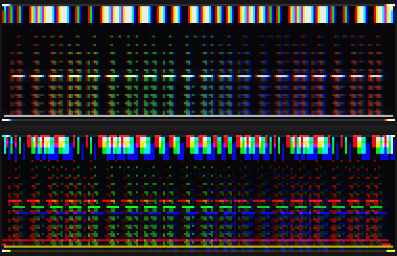
What I want your eyes on: STILL THE STRONGEST OF THE THIRTEEN. It is what misregistration IS, and it clears in 900ms, but MISREG_Y comes down from 3px on one word.
The receiver saturates, so returns appear at every range at once.
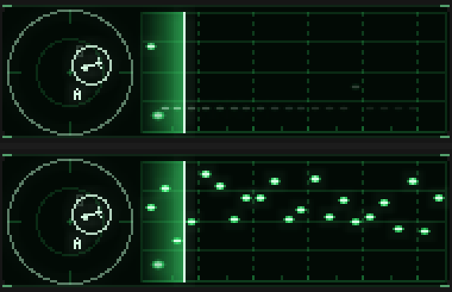
What I want your eyes on: Whether the scatter is too dense. Note the display clears at the SWEEP's pace, not the jammer's — a jammed column keeps its false return until the beam next crosses it, which is how a PPI behaves.
A dry patch travels across the stripes, two at a time. The widths are zero-sum, so it removes INK and not WIDTH — every keyline stays put.
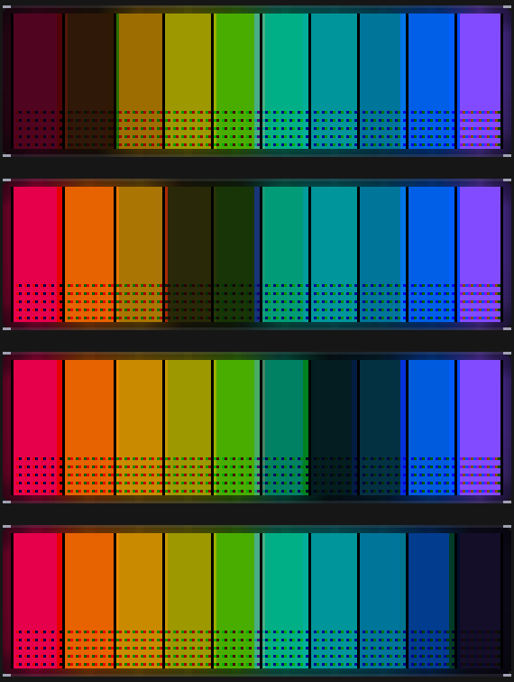
What I want your eyes on: Whether two stripes is the right width for the dry patch.
Five staggered strikes, each flashing the sky behind it. This replaced the vertical-sync roll you rejected.
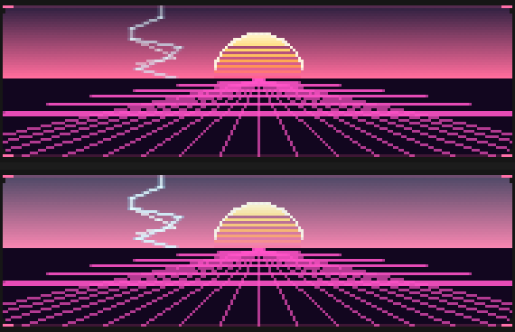
What I want your eyes on: Whether five strikes in 1800ms is the right density. Toxic and Noir set bolt_bright = 0 and are deliberately exempt — the storm respects that.
Every burner guts to its pilot, then an ignition front runs along the manifold relighting them with an overshoot flare.
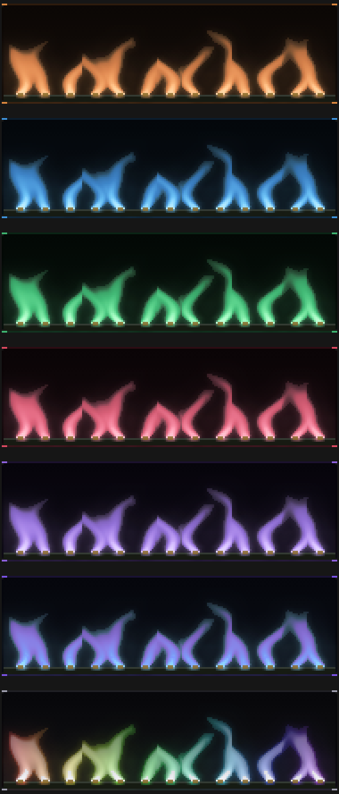
What I want your eyes on: The seven colourways are the other question — see the next item.
The surface breaks into a patchy froth and the tank runs slack. Three earlier models that INJECTED energy into the wave field all pushed crests through the top of the tank; this one only removes energy or bypasses the field.
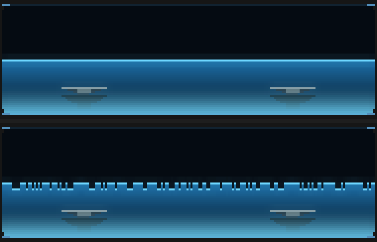
What I want your eyes on: Whether the froth reads as boiling water or as notches. It is 3px deep and irregular by hash — on parity it rendered as a perfect sawtooth.
1.1Hz wow with 8.5Hz flutter on the transport, the wow reaching the tape slack.
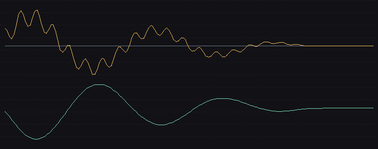
What I want your eyes on: Nothing to judge in a still — this one only exists in motion. The plot is evidence the mechanism is right; judge the look in the running app.
Every cable slides to the other jack of its pair and back, so the chevron mirrors itself.
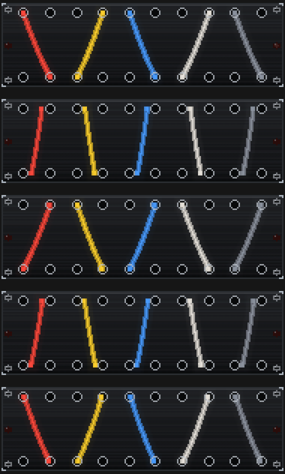
What I want your eyes on: Whether the plugs sitting mid-air between sockets (rows 2 and 4) read as cables in transit or as a mistake.
Thirty-two bands fanned into two mirrored angel wings on a Y2K chrome floor — bass at the root, so the wings beat. Shown here in Eon Break (cobalt-to-electric on an opaque black panel).
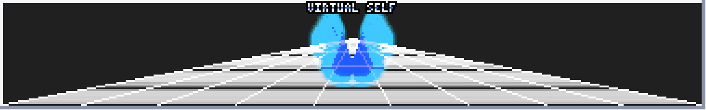
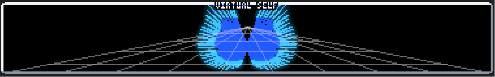
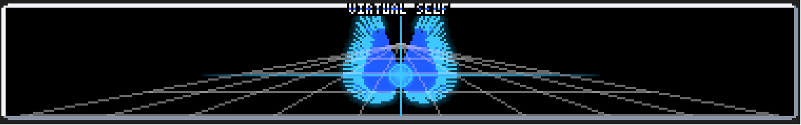
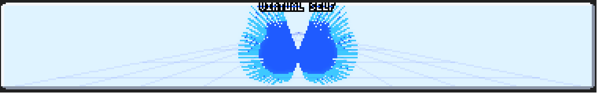
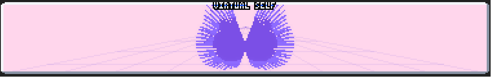
What I want your eyes on: Whether the wings read as a METER at a glance — the fan of feathers as a bent bar row — and which of the five colourways to keep (Particle Arts / Eon Break / Angel Voices / Utopia / Ghost). On the two light panels the tip is a saturated palette colour, not white, so it does not wash out — is the tip-against-body contrast right on ice and on pink?
A glitch terminal. Each band is a narrow column of stacked ticks — a piano roll — lit from the bottom up, peak ticks hanging above the settled level, the whole set scrolling one column sideways on each onset. A romanised phrase sits top-left, light rays rise from the bottom edge, and the flourish is a datamosh. Shown in Ghost Cobalt (cobalt ticks, electric peaks, on an opaque black panel).
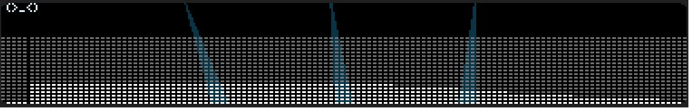
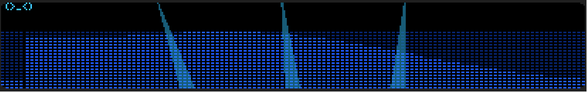
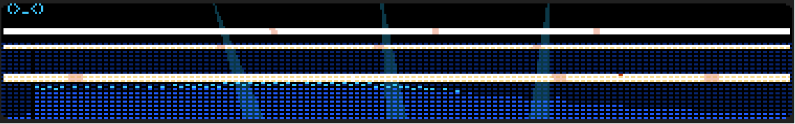
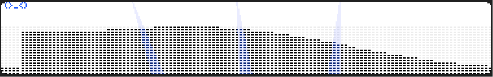
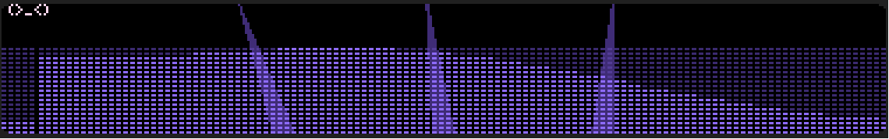
What I want your eyes on: Whether the piano roll reads as a METER at a glance — columns bottom-up, the peak tick distinct from the body — the phrase legible, the rays subtle rather than a second meter, and the datamosh reading as a glitch (slices, inversion, a one-frame strobe) rather than as garbage. On the inverse colourway the ticks are black on a white panel — do they read?
A low-poly chrome icosphere the bass inflates, spinning at the panel centre, ringed by twenty-four spectrum spikes — the spikes are the readable meter, the orb is the bass. Edges are chrome-shaded by their screen-space normal (a bright sky reflected in the top, a darker ground in the bottom), front edges bright and back edges faint so it reads as a sphere without a depth sort. Shown in Orb Eon (electric-cyan orb on a black-to-cobalt vignette).
What I want your eyes on: Whether the orb reads as a chrome wireframe SPHERE — front edges bright, back edges faint, the sky/ground split visible — rather than a scribble, and whether the spikes read as a METER ring around it. Does the shatter read as a shatter (triangles flying outward and fading) with the orb regrowing? On the two light-ended gradients (chrome's ice, angel's pink) the orb wireframe is the darker, contrast-carrying colour and the spikes are white — do the lower edges still read where the ground meets the gradient bottom?
A worn cassette dub of a Bones / TeamSESH tape, where each of the SEVEN colourways is a DIFFERENT thing rather than one look tinted seven ways. The shared bones: rolling scanlines, a blackletter word (SESH, BONES, TEAMSESH, ...), a camcorder PLAY/REC stamp, and a bass-hit tape-dropout flourish — no trademark marks. What differs: Tape is heavy per-band tears with a bright head-switching bar rolling up the frame and the word shrunk to a bottom-right CAPTION — the tears are the picture. Word turns the tears OFF (clean scanlines), centres a big word that PULSES on the bass and drips hard — the word is the meter. VHS gets a muted-violet panel, a doubled pink-red/cyan chroma bleed on the word AND stamp, and a slow colour-shift wobble. Red keeps the one red on the word, and the loud bands' tears turn red too. Bleached inverts it all onto a bleached panel with faint paper grain. Graveyard and Night Vision come from Bones' Blunts From The Graveyard compilations — violet graveyard fog with green night-vision tears, and a full phosphor-green sensor look. The flourish is now a bass-hit SLAM: a blank frame, then the word held in place while a static field and tear rows glitch around it — it never slides in from a side.
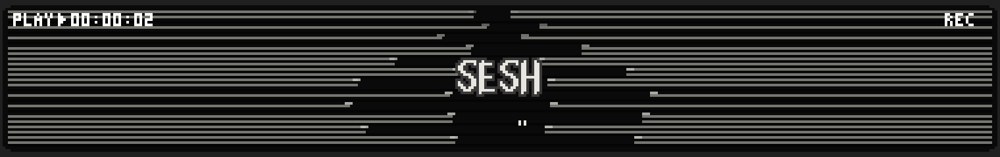
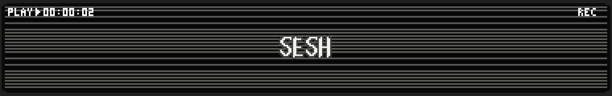
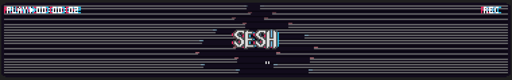
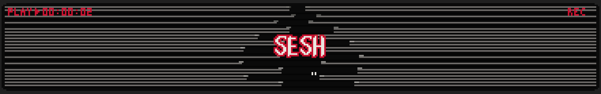
#c8102e) on the word outline and REC dot, PLUS the torn-edge streaks of the loud bands turning red so the red is in the picture, not only the word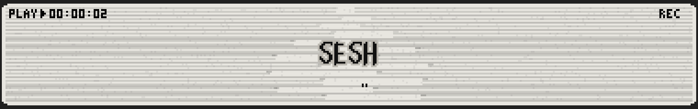
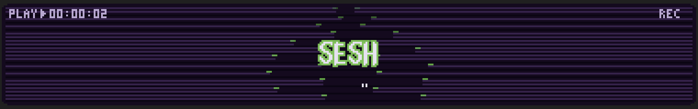
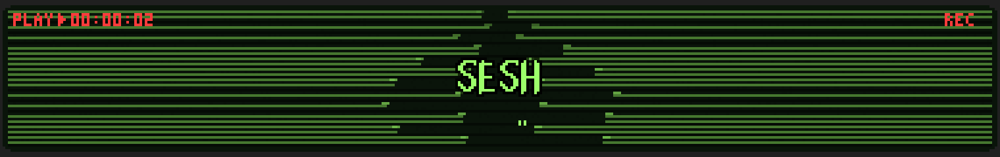
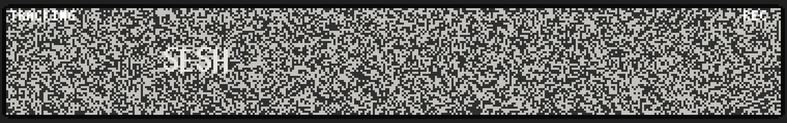
What I want your eyes on: Could a stranger tell the SEVEN apart at a glance? Each should read as its own meter: Tape — tears + the rolling head-switch bar, word only a corner caption; Word — a clean, pulsing, dripping centred word with no tears; VHS — tears + the muted-violet cast and pink-red/cyan bleed/wobble; Red — tears that go red on the loud bands plus the red word; Bleached — the inverted grainy tape; Graveyard — violet fog, moon-white word, green tears; Night Vision — all phosphor green with red REC. And the flourish: it must fire only on a BASS hit and read as an in-place SLAM — the word must never arrive from a side.
A Cyberpunk-2077 combat HUD. A black panel framed in a 1 px accent line whose top-right corner is chamfered at 45°, with a hatch triangle in the bottom-left corner — the two ornaments that carry the 2077 UI language without lifting any trademark asset. Sixteen chamfered CELLS stride across the interior (each averaging four bands), filling bottom-up with a 45° hatch capped by a solid bar; a cell's outline goes hot and a hot tick hangs at its decaying peak. A spectrum SCANNER traces the raw 64 bands across the top third with a two-frame afterimage, and a left-hand RAM/HP/NET readout column fills the 34 px the telemetry would occupy. The flourish is a relic malfunction. Shown in Night Yellow (yellow on black, cyan scanner, white readouts) unless noted.
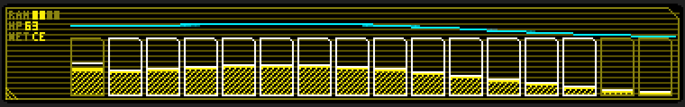
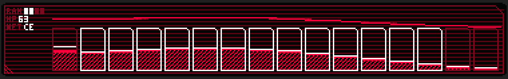
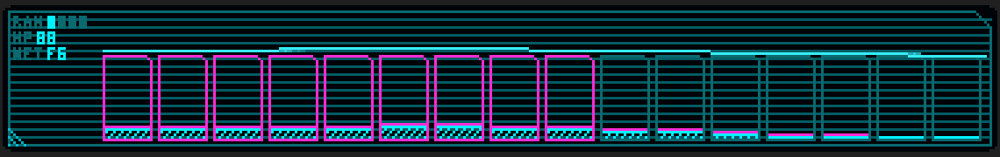
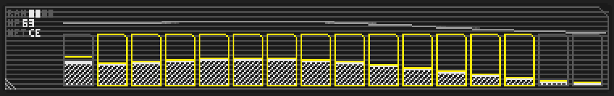
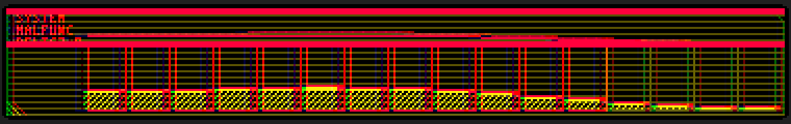
What I want your eyes on: Do the cells read as a bottom-up METER at a glance, with the hatch visible at taskbar scale and the peak ticks distinct? Do the chamfer and the bottom-left hatch triangle read as 2077 UI without resembling any lifted asset (no samurai, no wordmark, no logo)? Is the scanner a LINE and not a smear? Are the readouts worth their 34 px, or should the cells always take the full width? Does the malfunction read as an RGB split with red bars, then clean? And is Corpo a keep, or too grey beside the neon four?
The user's own VSCode "2077" theme (endormi.2077-theme) rendered as a live shell whose output lines ARE the meter — it should sit on the taskbar like a second VSCode pane. Every colourway reads two ways at once: as a terminal (a prompt >, a command that TYPES continuously while music plays (faster the louder it gets) plus a burst of characters on every onset, a block cursor that blinks at 1 Hz, hot-pink line numbers down the left, a status bar with the now-playing title dressed up as a dodgy .mp3 / an rms % / UTF-8 LF) and as a meter (each row is a band group, a bar of ▮ block glyphs growing with that band's level, bass at the BOTTOM next to the prompt like a log's newest line, a ▯ outline peak-hold marker at the tip; the loudest row gets a line-highlight, a clipping row the selection colour). The rows are at a 6 px pitch (a 5 px glyph plus a 1 px gap, never overlapping); when there are at least six of them a # bpm ~ NNN comment sits above the prompt, its tempo derived from the onset interval. After a command executes, its fake output line lingers on its OWN 3 second dwell rather than counted onsets, and the previous command's output stays visible one row up for as long as its own dwell has left, so two output lines can be on screen fading independently. The five colourways are five DIFFERENT sessions, each with its own command list: 2077 a mixed dev shell (the theme verbatim, seven-colour ANSI rows), Cyan network ops (monochrome cyan, pink only on the prompt), Hot git (pink/magenta lead), Matrix sysadmin (green on the editor navy, green prompt), Editor build & test (the code-editor token palette). The flourish is a panic!: every meter row becomes a red Rust stack trace that scrolls up over ~700 ms revealing the meter from the bottom, the cursor freezes solid and the status bar turns red with EXIT 101, then the prompt runs clear. No trademark marks — "2077" is only the colourway names. 0.051 ms/frame steady, 0.070 ms during the trace.
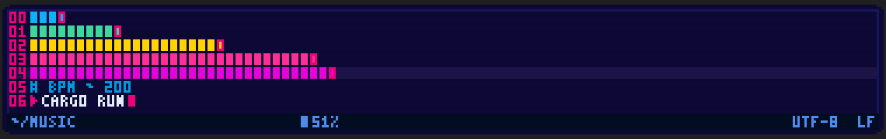
▯ peak markers, a # bpm ~ comment, TWO output lines lingering at once (TOTAL 48 -RW-R--R-- and VITE READY IN 312 MS), the prompt typing into python analyse.py with a pink block cursor, and the status bar's left slot reading daire_-_earth_move_edit_(not_a... — the now-playing title turned into a dodgy, marquee-scrolling .mp3 filename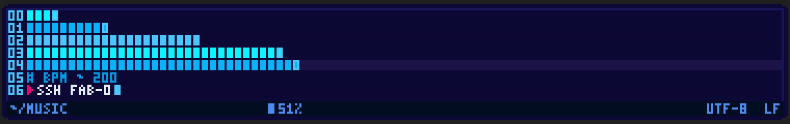
ssh fab-01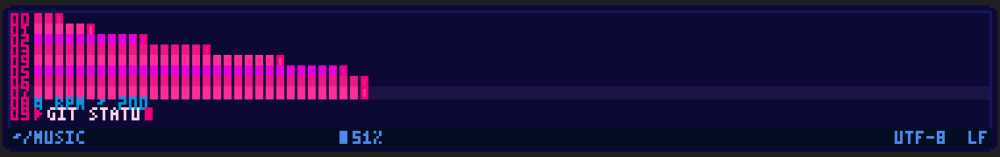
git status; the bar hues are rotated so the loud bass rows never coincide with the 2077 palette at the same height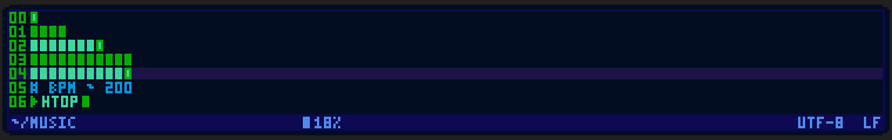
tail -f app.log; the status bar background matches the panel (editor bg) by design, so only its text and the dodgy filename read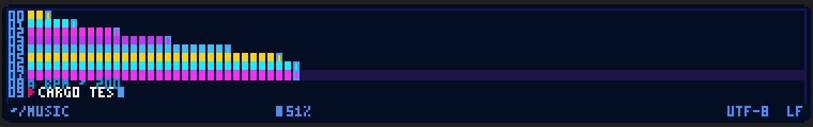
make -j8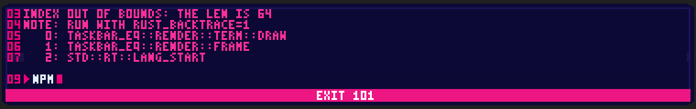
panic!: the meter rows overpainted by a red Rust stack trace (index out of bounds: the len is 64, taskbar_eq::render::term::draw, ...) scrolling up to reveal the meter from the bottom, the cursor frozen solid, and the status bar red with EXIT 101; then the prompt runs clear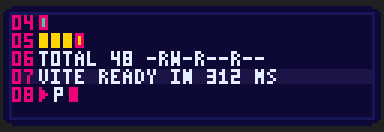
What I want your eyes on: Does it read as YOUR terminal at a glance — prompt, typed command, block cursor, pink line numbers, status bar — AND as a meter, the bars clearly growing with the bass at the bottom with the peak marker visible? Are the five sessions telling five different stories (ssh / git / htop / cargo test / cargo run)? The rows are at a 6 px pitch so the line numbers and the panic trace are all legible, none overlapping. Do the output lines linger long enough to actually read now, and does the typing feel like a real pace rather than a crawl? Is the dodgy .mp3 filename in the status bar funny and readable? Is the panic! funny or annoying? And which of the five sessions are keepers?